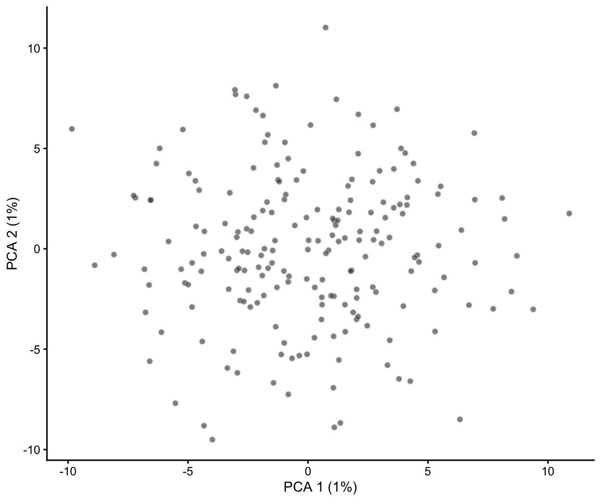
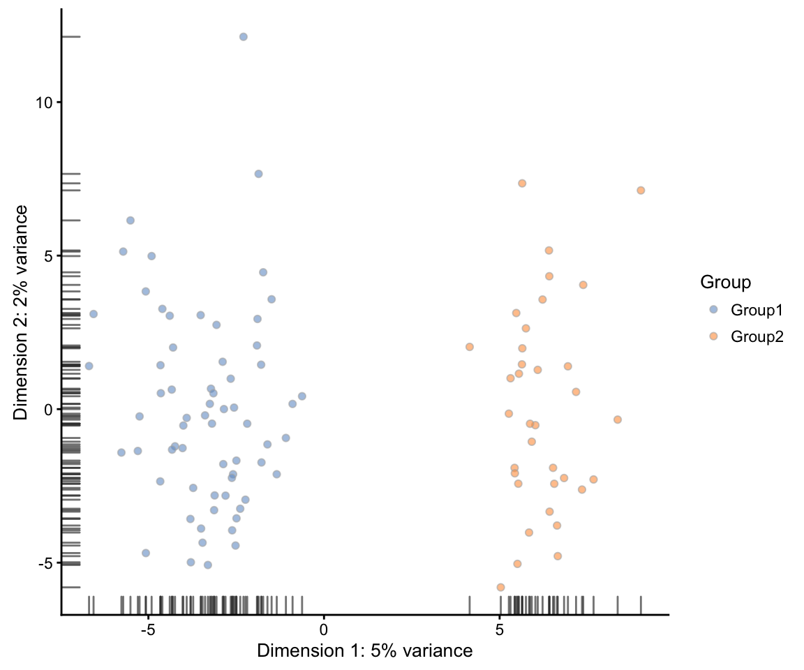
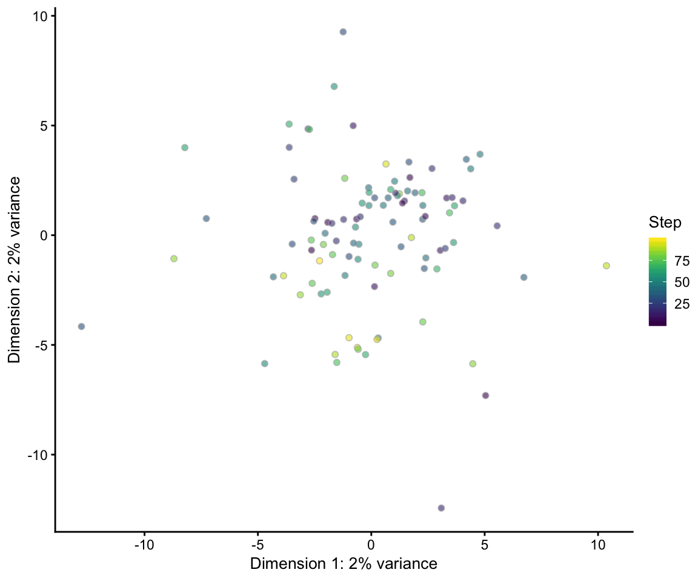
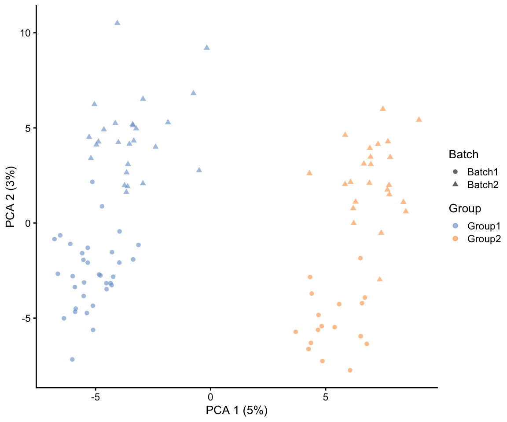
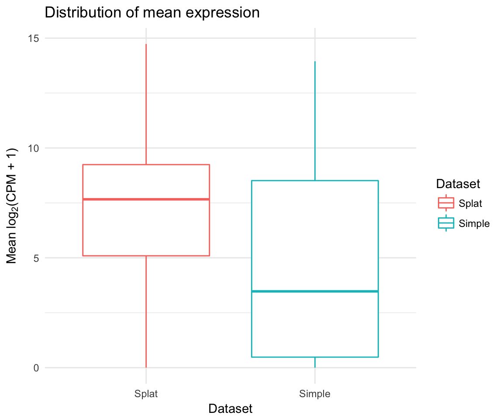
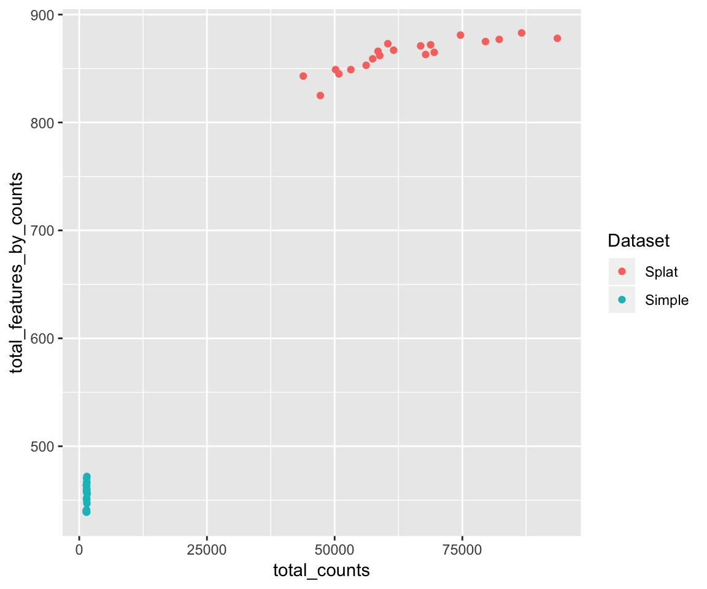
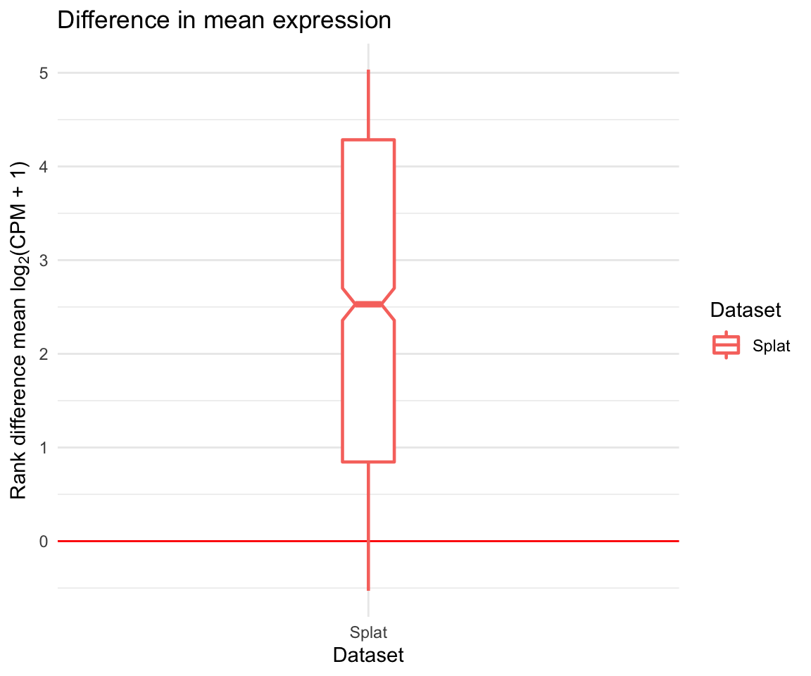
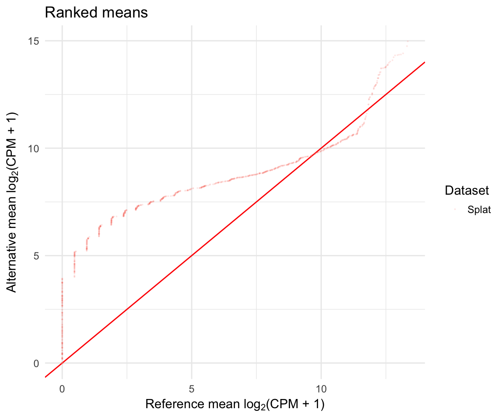

Introduction to Splatter
Luke Zappia
2017-10-02
Splatter logo
Welcome to Splatter! Splatter is an R package for the simple simulation of single-cell RNA sequencing data. This vignette gives an overview and introduction to Splatter’s functionality.
Installation
Splatter can be installed from Bioconductor:
source("https://bioconductor.org/biocLite.R")
biocLite("splatter")To install the most recent development version from Github use:
biocLite("Oshlack/splatter", dependencies = TRUE,
build_vignettes = TRUE)Quickstart
Assuming you already have a matrix of count data similar to that you wish to simulate there are two simple steps to creating a simulated data set with Splatter. Here is an example using the example dataset in the scater package:
# Load package
library(splatter)## Loading required package: scater## Loading required package: Biobase## Loading required package: BiocGenerics## Loading required package: parallel##
## Attaching package: 'BiocGenerics'## The following objects are masked from 'package:parallel':
##
## clusterApply, clusterApplyLB, clusterCall, clusterEvalQ,
## clusterExport, clusterMap, parApply, parCapply, parLapply,
## parLapplyLB, parRapply, parSapply, parSapplyLB## The following objects are masked from 'package:stats':
##
## IQR, mad, sd, var, xtabs## The following objects are masked from 'package:base':
##
## anyDuplicated, append, as.data.frame, cbind, colMeans,
## colnames, colSums, do.call, duplicated, eval, evalq, Filter,
## Find, get, grep, grepl, intersect, is.unsorted, lapply,
## lengths, Map, mapply, match, mget, order, paste, pmax,
## pmax.int, pmin, pmin.int, Position, rank, rbind, Reduce,
## rowMeans, rownames, rowSums, sapply, setdiff, sort, table,
## tapply, union, unique, unsplit, which, which.max, which.min## Welcome to Bioconductor
##
## Vignettes contain introductory material; view with
## 'browseVignettes()'. To cite Bioconductor, see
## 'citation("Biobase")', and for packages 'citation("pkgname")'.## Loading required package: ggplot2## Loading required package: SingleCellExperiment## Loading required package: SummarizedExperiment## Loading required package: GenomicRanges## Loading required package: stats4## Loading required package: S4Vectors##
## Attaching package: 'S4Vectors'## The following object is masked from 'package:base':
##
## expand.grid## Loading required package: IRanges## Loading required package: GenomeInfoDb## Loading required package: DelayedArray## Loading required package: matrixStats##
## Attaching package: 'matrixStats'## The following objects are masked from 'package:Biobase':
##
## anyMissing, rowMedians##
## Attaching package: 'DelayedArray'## The following objects are masked from 'package:matrixStats':
##
## colMaxs, colMins, colRanges, rowMaxs, rowMins, rowRanges## The following object is masked from 'package:base':
##
## apply##
## Attaching package: 'scater'## The following object is masked from 'package:S4Vectors':
##
## rename## The following object is masked from 'package:stats':
##
## filter# Load example data
data("sc_example_counts")
# Estimate parameters from example data
params <- splatEstimate(sc_example_counts)
# Simulate data using estimated parameters
sim <- splatSimulate(params, dropout.present = FALSE)## Getting parameters...## Creating simulation object...## Simulating library sizes...## Simulating gene means...## Simulating BCV...## Simulating counts..## Simulating dropout (if needed)...## Done!These steps will be explained in detail in the following sections but briefly the first step takes a dataset and estimates simulation parameters from it and the second step takes those parameters and simulates a new dataset.
The Splat simulation
Before we look at how we estimate parameters let’s first look at how Splatter simulates data and what those parameters are. We use the term ‘Splat’ to refer to the Splatter’s own simulation and differentiate it from the package itself. The core of the Splat model is a gamma-Poisson distribution used to generate a gene by cell matrix of counts. Mean expression levels for each gene are simulated from a gamma distribution and the Biological Coefficient of Variation is used to enforce a mean-variance trend before counts are simulated from a Poisson distribution. Splat also allows you to simulate expression outlier genes (genes with mean expression outside the gamma distribution) and dropout (random knock out of counts based on mean expression). Each cell is given an expected library size (simulated from a log-normal distribution) that makes it easier to match to a given dataset.
Splat can also simulate differential expression between groups of different types of cells or differentiation paths between different cells types where expression changes in a continuous way. These are described further in the simulating counts section.
Parameters
The parameters required for the Splat simulation are briefly described here:
-
Global parameters
-
nGenes- The number of genes to simulate. -
nCells- The number of cells to simulate. -
seed- Seed to use for generating random numbers.
-
-
Batch parameters
-
nBatches- The number of batches to simulate. -
batchCells- The number of cells in each batch. -
batch.facLoc- Location (meanlog) parameter for the batch effects factor log-normal distribution. -
batch.facScale- Scale (sdlog) parameter for the batch effects factor log-normal distribution.
-
-
Mean parameters
-
mean.shape- Shape parameter for the mean gamma distribution. -
mean.rate- Rate parameter for the mean gamma distribution.
-
-
Library size parameters
-
lib.loc- Location (meanlog) parameter for the library size log-normal distribution. -
lib.scale- Scale (sdlog) parameter for the library size log-normal distribution.
-
-
Expression outlier parameters
-
out.prob- Probability that a gene is an expression outlier. -
out.facLoc- Location (meanlog) parameter for the expression outlier factor log-normal distribution. -
out.facScale- Scale (sdlog) parameter for the expression outlier factor log-normal distribution.
-
-
Group parameters
-
nGroups- The number of groups or paths to simulate. -
group.prob- The probabilities that cells come from particular groups.
-
-
Differential expression parameters
-
de.prob- Probability that a gene is differentially expressed in each group or path. -
de.loProb- Probability that a differentially expressed gene is down-regulated. -
de.facLoc- Location (meanlog) parameter for the differential expression factor log-normal distribution. -
de.facScale- Scale (sdlog) parameter for the differential expression factor log-normal distribution.
-
-
Biological Coefficient of Variation parameters
-
bcv.common- Underlying common dispersion across all genes. -
bcv.df- Degrees of Freedom for the BCV inverse chi-squared distribution.
-
-
Dropout parameters
-
dropout.present- Logical. Whether to simulate dropout. -
dropout.mid- Midpoint parameter for the dropout logistic function. -
dropout.shape- Shape parameter for the dropout logistic function.
-
-
Differentiation path parameters
-
path.from- Vector giving the originating point of each path. -
path.length- Vector giving the number of steps to simulate along each path. -
path.skew- Vector giving the skew of each path. -
path.nonlinearProb- Probability that a gene changes expression in a non-linear way along the differentiation path. -
path.sigmaFac- Sigma factor for non-linear gene paths.
-
While this may look like a lot of parameters Splatter attempts to make it easy for the user, both by providing sensible defaults and making it easy to estimate many of the parameters from real data. For more details on the parameters see ?SplatParams.
The SplatParams object
All the parameters for the Splat simulation are stored in a SplatParams object. Let’s create a new one and see what it looks like.
params <- newSplatParams()
params## A Params object of class SplatParams
## Parameters can be (estimable) or [not estimable], 'Default' or 'NOT DEFAULT'.
##
## Global:
## (Genes) (Cells) [Seed]
## 10000 100 395011
##
## 27 additional parameters
##
## Batches:
## [Batches] [Batch Cells] [Location] [Scale]
## 1 100 0.1 0.1
##
## Mean:
## (Rate) (Shape)
## 0.3 0.6
##
## Library size:
## (Location) (Scale)
## 11 0.2
##
## Exprs outliers:
## (Probability) (Location) (Scale)
## 0.05 4 0.5
##
## Groups:
## [Groups] [Group Probs]
## 1 1
##
## Diff expr:
## [Probability] [Down Prob] [Location] [Scale]
## 0.1 0.5 0.1 0.4
##
## BCV:
## (Common Disp) (DoF)
## 0.1 60
##
## Dropout:
## [Present] (Midpoint) (Shape)
## FALSE 0 -1
##
## Paths:
## [From] [Length] [Skew] [Non-linear]
## 0 100 0.5 0.1
## [Sigma Factor]
## 0.8As well as telling us what type of object we have (“A Params object of class SplatParams”) and showing us the values of the parameter this output gives us some extra information. We can see which parameters can be estimated by the splatEstimate function (those in parentheses), which can’t be estimated (those in brackets) and which have been changed from their default values (those in ALL CAPS).
Getting and setting
If we want to look at a particular parameter, for example the number of genes to simulate, we can extract it using the getParam function:
getParam(params, "nGenes")## [1] 10000Alternatively, to give a parameter a new value we can use the setParam function:
## [1] 5000If we want to extract multiple parameters (as a list) or set multiple parameters we can use the getParams or setParams functions:
# Set multiple parameters at once (using a list)
params <- setParams(params, update = list(nGenes = 8000, mean.rate = 0.5))
# Extract multiple parameters as a list
getParams(params, c("nGenes", "mean.rate", "mean.shape"))## $nGenes
## [1] 8000
##
## $mean.rate
## [1] 0.5
##
## $mean.shape
## [1] 0.6# Set multiple parameters at once (using additional arguments)
params <- setParams(params, mean.shape = 0.5, de.prob = 0.2)
params## A Params object of class SplatParams
## Parameters can be (estimable) or [not estimable], 'Default' or 'NOT DEFAULT'.
##
## Global:
## (GENES) (Cells) [Seed]
## 8000 100 395011
##
## 27 additional parameters
##
## Batches:
## [Batches] [Batch Cells] [Location] [Scale]
## 1 100 0.1 0.1
##
## Mean:
## (RATE) (SHAPE)
## 0.5 0.5
##
## Library size:
## (Location) (Scale)
## 11 0.2
##
## Exprs outliers:
## (Probability) (Location) (Scale)
## 0.05 4 0.5
##
## Groups:
## [Groups] [Group Probs]
## 1 1
##
## Diff expr:
## [PROBABILITY] [Down Prob] [Location] [Scale]
## 0.2 0.5 0.1 0.4
##
## BCV:
## (Common Disp) (DoF)
## 0.1 60
##
## Dropout:
## [Present] (Midpoint) (Shape)
## FALSE 0 -1
##
## Paths:
## [From] [Length] [Skew] [Non-linear]
## 0 100 0.5 0.1
## [Sigma Factor]
## 0.8The parameters with have changed are now shown in ALL CAPS to indicate that they been changed form the default.
We can also set parameters directly when we call newSplatParams:
params <- newSplatParams(lib.loc = 12, lib.scale = 0.6)
getParams(params, c("lib.loc", "lib.scale"))## $lib.loc
## [1] 12
##
## $lib.scale
## [1] 0.6Estimating parameters
Splat allows you to estimate many of it’s parameters from a data set containing counts using the splatEstimate function.
# Check that sc_example counts is an integer matrix
class(sc_example_counts)## [1] "matrix"typeof(sc_example_counts)## [1] "integer"# Check the dimensions, each row is a gene, each column is a cell
dim(sc_example_counts)## [1] 2000 40# Show the first few entries
sc_example_counts[1:5, 1:5]## Cell_001 Cell_002 Cell_003 Cell_004 Cell_005
## Gene_0001 0 123 2 0 0
## Gene_0002 575 65 3 1561 2311
## Gene_0003 0 0 0 0 1213
## Gene_0004 0 1 0 0 0
## Gene_0005 0 0 11 0 0params <- splatEstimate(sc_example_counts)Here we estimated parameters from a counts matrix but splatEstimate can also take a SingleCellExperiment object. The estimation process has the following steps:
- Mean parameters are estimated by fitting a gamma distribution to the mean expression levels.
- Library size parameters are estimated by fitting a log-normal distribution to the library sizes.
- Expression outlier parameters are estimated by determining the number of outliers and fitting a log-normal distribution to their difference from the median.
- BCV parameters are estimated using the
estimateDispfunction from theedgeRpackage. - Dropout parameters are estimated by checking if dropout is present and fitting a logistic function to the relationship between mean expression and proportion of zeros.
For more details of the estimation procedures see ?splatEstimate.
Simulating counts
Once we have a set of parameters we are happy with we can use splatSimulate to simulate counts. If we want to make small adjustments to the parameters we can provide them as additional arguments, alternatively if we don’t supply any parameters the defaults will be used:
sim <- splatSimulate(params, nGenes = 1000, dropout.present = FALSE)## Getting parameters...## Creating simulation object...## Simulating library sizes...## Simulating gene means...## Simulating BCV...## Simulating counts..## Simulating dropout (if needed)...## Done!sim## class: SingleCellExperiment
## dim: 1000 40
## metadata(1): params
## assays(6): BatchCellMeans BaseCellMeans ... TrueCounts counts
## rownames(1000): Gene1 Gene2 ... Gene999 Gene1000
## rowData names(4): Gene BaseGeneMean OutlierFactor GeneMean
## colnames(40): Cell1 Cell2 ... Cell39 Cell40
## colData names(3): Cell Batch ExpLibSize
## reducedDimNames(0):
## spikeNames(0):Looking at the output of splatSimulate we can see that sim is SingleCellExperiment object with 1000 features (genes) and 40 samples (cells). The main part of this object is a features by samples matrix containing the simulated counts (accessed using counts), although it can also hold other expression measures such as FPKM or TPM. Additionaly a SingleCellExperiment contains phenotype information about each cell (accessed using colData) and feature information about each gene (accessed using rowData). Splatter uses these slots, as well as assays, to store information about the intermediate values of the simulation.
# Access the counts
counts(sim)[1:5, 1:5]## Cell1 Cell2 Cell3 Cell4 Cell5
## Gene1 0 402 19 311 0
## Gene2 0 12 25 252 0
## Gene3 0 0 0 3 0
## Gene4 0 0 0 14 3
## Gene5 0 95 0 7 0# Information about genes
head(rowData(sim))## DataFrame with 6 rows and 4 columns
## Gene BaseGeneMean OutlierFactor GeneMean
## <factor> <numeric> <numeric> <numeric>
## 1 Gene1 210.1089973 1 210.1089973
## 2 Gene2 45.3776510 1 45.3776510
## 3 Gene3 0.6516767 1 0.6516767
## 4 Gene4 74.2508364 1 74.2508364
## 5 Gene5 13.9862181 1 13.9862181
## 6 Gene6 6.9628144 1 6.9628144# Information about cells
head(colData(sim))## DataFrame with 6 rows and 3 columns
## Cell Batch ExpLibSize
## <factor> <character> <numeric>
## Cell1 Cell1 Batch1 1187108.5
## Cell2 Cell2 Batch1 600191.4
## Cell3 Cell3 Batch1 688730.7
## Cell4 Cell4 Batch1 256123.3
## Cell5 Cell5 Batch1 278401.4
## Cell6 Cell6 Batch1 385774.4# Gene by cell matrices
names(assays(sim))## [1] "BatchCellMeans" "BaseCellMeans" "BCV" "CellMeans"
## [5] "TrueCounts" "counts"# Example of cell means matrix
assays(sim)$CellMeans[1:5, 1:5]## Cell1 Cell2 Cell3 Cell4 Cell5
## Gene1 8.281664e-05 4.086520e+02 1.480335e+01 306.253250 1.453613e-02
## Gene2 2.394664e-13 1.278677e+01 2.171332e+01 278.515526 3.609326e-11
## Gene3 7.817149e-21 5.174676e-13 3.583580e-01 2.217521 9.095013e-52
## Gene4 1.737589e-08 4.257554e-11 1.005446e-07 16.146507 3.822216e+00
## Gene5 2.822351e-22 1.094278e+02 9.679284e-05 8.000741 1.988529e-05An additional (big) advantage of outputting a SingleCellExperiment is that we get immediate access to other analysis packages, such as the plotting functions in scater. For example we can make a PCA plot:
plotPCA(sim, exprs_values = "counts")
(NOTE: Your values and plots may look different as the simulation is random and produces different results each time it is run.)
For more details about the SingleCellExperiment object refer to the vignette. For information about what you can do with scater refer to the scater documentation and vignette.
The splatSimulate function outputs the following additional information about the simulation:
-
Cell information (
pData)-
Cell- Unique cell identifier. -
Group- The group or path the cell belongs to. -
ExpLibSize- The expected library size for that cell. -
Step(paths only) - How far along the path each cell is.
-
-
Gene information (
fData)-
Gene- Unique gene identifier. -
BaseGeneMean- The base expression level for that gene. -
OutlierFactor- Expression outlier factor for that gene (1 is not an outlier). -
GeneMean- Expression level after applying outlier factors. -
DEFac[Group]- The differential expression factor for each gene in a particular group (1 is not differentially expressed). -
GeneMean[Group]- Expression level of a gene in a particular group after applying differential expression factors.
-
-
Gene by cell information (
assayData)-
BaseCellMeans- The expression of genes in each cell adjusted for expected library size. -
BCV- The Biological Coefficient of Variation for each gene in each cell. -
CellMeans- The expression level of genes in each cell adjusted for BCV. -
TrueCounts- The simulated counts before dropout. -
Dropout- Logical matrix showing which counts have been dropped in which cells.
-
Values that have been added by Splatter are named using UpperCamelCase to separate them from the underscore_naming used by scater and other packages. For more information on the simulation see ?splatSimulate.
Simulating groups
So far we have only simulated a single population of cells but often we are interested in investigating a mixed population of cells and looking to see what cell types are present or what differences there are between them. Splatter is able to simulate these situations by changing the method argument Here we are going to simulate two groups, by specifying the group.prob parameter and setting the method parameter to "groups":
(NOTE: We have also set the verbose argument to FALSE to stop Splatter printing progress messages.)
sim.groups <- splatSimulate(group.prob = c(0.5, 0.5), method = "groups",
verbose = FALSE)
plotPCA(sim.groups, colour_by = "Group", exprs_values = "counts")
As we have set both the group probabilites to 0.5 we should get approximately equal numbers of cells in each group (around 50 in this case). If we wanted uneven groups we could set group.prob to any set of probabilites that sum to 1.
Simulating paths
The other situation that is often of interest is a differentiation process where one cell type is changing into another. Splatter approximates this process by simulating a series of steps between two groups and randomly assigning each cell to a step. We can create this kind of simulation using the "paths" method.
sim.paths <- splatSimulate(method = "paths", verbose = FALSE)
plotPCA(sim.paths, colour_by = "Step", exprs_values = "counts")
Here the colours represent the “step” of each cell or how far along the differentiation path it is. We can see that the cells with dark colours are more similar to the originating cell type and the light coloured cells are closer to the final, differentiated, cell type. By setting additional parameters it is possible to simulate more complex process (for example multiple mature cell types from a single progenitor).
Batch effects
Another factor that is important in the analysis of any sequencing experiment are batch effects, technical variation that is common to a set of samples processed at the same time. We apply batch effects by telling Splatter how many cells are in each batch:
sim.batches <- splatSimulate(batchCells = c(50, 50), verbose = FALSE)
plotPCA(sim.batches, colour_by = "Batch", exprs_values = "counts")
This looks at lot like when we simulated groups and that is because the process is very similar. The difference is that batch effects are applied to all genes, not just those that are differentially expressed, and the effects are usually smaller. By combining groups and batches we can simulate both unwanted variation that we aren’t interested in (batch) and the wanted variation we are looking for (group):
sim.groups <- splatSimulate(batchCells = c(50, 50), group.prob = c(0.5, 0.5),
method = "groups", verbose = FALSE)
plotPCA(sim.groups, shape_by = "Batch", colour_by = "Group",
exprs_values = "counts")
Here we see that the effects of the group (first component) are stronger than the batch effects (second component) but by adjusting the parameters we could made the batch effects dominate.
Convenience functions
Each of the Splatter simulation methods has it’s own convenience function. To simulate a single population use splatSimulateSingle() (equivalent to splatSimulate(method = "single")), to simulate grops use splatSimulateGroups() (equivalent to splatSimulate(method = "groups")) or to simulate paths use splatSimulatePaths() (equivalent to splatSimulate(method = "paths")).
Other simulations
As well as it’s own Splat simulation method the Splatter package contains implementations of other single-cell RNA-seq simulations that have been published or wrappers around simulations included in other packages. To see all the available simulations run the listSims() function:
listSims()## Splatter currently contains 8 simulations
##
## Splat (splat)
## DOI: Github:
## The Splat simulation generates means from a gamma distribution, adjusts them for BCV and generates counts from a gamma-poisson. Dropout can be optionally added.
##
## Splat Single (splatSingle)
## DOI: Github:
## The Splat simulation with a single population.
##
## Splat Groups (splatGroups)
## DOI: Github:
## The Splat simulation with multiple groups. Each group can have it's own differential expression probability and fold change distribution.
##
## Splat Paths (splatPaths)
## DOI: Github:
## The Splat simulation with differentiation paths. Each path can have it's own length, skew and probability. Genes can change in non-linear ways.
##
## Simple (simple)
## DOI: Github:
## A simple simulation with gamma means and negative binomial counts.
##
## Lun (lun)
## DOI: 10.1186/s13059-016-0947-7 Github: MarioniLab/Deconvolution2016
## Gamma distributed means and negative binomial counts. Cells are given a size factor and differential expression can be simulated with fixed fold changes.
##
## Lun 2 (lun2)
## DOI: 10.1101/073973 Github: MarioniLab/PlateEffects2016
## Negative binomial counts where the means and dispersions have been sampled from a real dataset. The core feature of the Lun 2 simulation is the addition of plate effects. Differential expression can be added between two groups of plates and optionally a zero-inflated negative-binomial can be used.
##
## scDD (scDD)
## DOI: 10.1186/s13059-016-1077-y Github: kdkorthauer/scDD
## The scDD simulation samples a given dataset and can simulate differentially expressed and differentially distributed genes between two conditions.(or more conveniently for the vignette as a table)
| Name | Prefix | DOI | Github | Description |
|---|---|---|---|---|
| Splat | splat | The Splat simulation generates means from a gamma distribution, adjusts them for BCV and generates counts from a gamma-poisson. Dropout can be optionally added. | ||
| Splat Single | splatSingle | The Splat simulation with a single population. | ||
| Splat Groups | splatGroups | The Splat simulation with multiple groups. Each group can have it’s own differential expression probability and fold change distribution. | ||
| Splat Paths | splatPaths | The Splat simulation with differentiation paths. Each path can have it’s own length, skew and probability. Genes can change in non-linear ways. | ||
| Simple | simple | A simple simulation with gamma means and negative binomial counts. | ||
| Lun | lun | 10.1186/s13059-016-0947-7 | MarioniLab/Deconvolution2016 | Gamma distributed means and negative binomial counts. Cells are given a size factor and differential expression can be simulated with fixed fold changes. |
| Lun 2 | lun2 | 10.1101/073973 | MarioniLab/PlateEffects2016 | Negative binomial counts where the means and dispersions have been sampled from a real dataset. The core feature of the Lun 2 simulation is the addition of plate effects. Differential expression can be added between two groups of plates and optionally a zero-inflated negative-binomial can be used. |
| scDD | scDD | 10.1186/s13059-016-1077-y | kdkorthauer/scDD | The scDD simulation samples a given dataset and can simulate differentially expressed and differentially distributed genes between two conditions. |
Each simulation has it’s own prefix which gives the name of the functions associated with that simulation. For example the prefix for the simple simulation is simple so it would store it’s parameters in a SimpleParams object that can be created using newSimpleParams() or estimated from real data using simpleEstimate(). To simulate data using that simulation you would use simpleSimulate(). Each simulation returns a SingleCellExperiment object with intermediate values similar to that returned by splatSimulate(). For more detailed information on each simulation see the appropriate help page (eg. ?simpleSimulate for information on how the simple simulation works or ? lun2Estimate for details of how the Lun 2 simulation estimates parameters) or refer to the appropriate paper or package.
Other expression values
Splatter is designed to simulate count data but some analysis methods expect other expression values, particularly length-normalised values such as TPM or FPKM. The scater package has functions for adding these values to a SingleCellExperiment object but they require a length for each gene. The addGeneLengths function can be used to simulate these lengths:
sim <- simpleSimulate(verbose = FALSE)
sim <- addGeneLengths(sim)
head(rowData(sim))## DataFrame with 6 rows and 3 columns
## Gene GeneMean Length
## <factor> <numeric> <numeric>
## 1 Gene1 10.53439855 5193
## 2 Gene2 2.10971396 4499
## 3 Gene3 4.47004567 5511
## 4 Gene4 0.19267026 3381
## 5 Gene5 0.06672189 2570
## 6 Gene6 0.87920676 806We can then use scater to calculate TPM:
tpm(sim) <- calculateTPM(sim, rowData(sim)$Length)
tpm(sim)[1:5, 1:5]## Cell1 Cell2 Cell3 Cell4 Cell5
## Gene1 0.22854912 0.16875798 0.23480191 0.20342087 0.21439203
## Gene2 0.04946331 0.01623250 0.03387770 0.03354284 0.03299512
## Gene3 0.05384030 0.07951009 0.02765665 0.04107491 0.02693613
## Gene4 0.00000000 0.00000000 0.00000000 0.00000000 0.00000000
## Gene5 0.00000000 0.00000000 0.00000000 0.02935977 0.00000000The default method used by addGeneLengths to simulate lengths is to generate values from a log-normal distribution which are then rounded to give an integer length. The parameters for this distribution are based on human protein coding genes but can be adjusted if needed (for example for other species). Alternatively lengths can be sampled from a provided vector (see ?addGeneLengths for details and an example).
Comparing simulations and real data
One thing you might like to do after simulating data is to compare it to a real dataset, or compare simulations with different parameters or models. Splatter provides a function compareSCEs that aims to make these comparisons easier. As the name suggests this function takes a list of SingleCellExperiment objects, combines the datasets and produces some plots comparing them. Let’s make two small simulations and see how they compare.
sim1 <- splatSimulate(nGenes = 1000, batchCells = 20, verbose = FALSE)
sim2 <- simpleSimulate(nGenes = 1000, nCells = 20, verbose = FALSE)
comparison <- compareSCEs(list(Splat = sim1, Simple = sim2))
names(comparison)## [1] "FeatureData" "PhenoData" "Plots"names(comparison$Plots)## [1] "Means" "Variances" "MeanVar" "LibrarySizes"
## [5] "ZerosGene" "ZerosCell" "MeanZeros"The returned list has three items. The first two are the combined datasets by gene (FeatureData) and by cell (PhenoData) and the third contains some comparison plots (produced using ggplot2), for example a plot of the distribution of means:
comparison$Plots$Means
These are only a few of the plots you might want to consider but it should be easy to make more using the returned data. For example, we could plot the number of expressed genes against the library size:
library("ggplot2")
ggplot(comparison$PhenoData,
aes(x = total_counts, y = total_features, colour = Dataset)) +
geom_point()
Comparing differences
Sometimes instead of visually comparing datasets it may be more interesting to look at the differences between them. We can do this using the diffSCEs function. Similar to compareSCEs this function takes a list of SingleCellExperiment objects but now we also specify one to be a reference. A series of similar plots are returned but instead of showing the overall distributions they demonstrate differences from the reference.
difference <- diffSCEs(list(Splat = sim1, Simple = sim2), ref = "Simple")
difference$Plots$Means
We also get a series of Quantile-Quantile plot that can be used to compare distributions.
difference$QQPlots$Means
Making panels
Each of these comparisons makes several plots which can be a lot to look at. To make this easier, or to produce figures for publications, you can make use of the functions makeCompPanel, makeDiffPanel and makeOverallPanel.
These functions combine the plots into a single panel using the cowplot package. The panels can be quite large and hard to view (for example in RStudio’s plot viewer) so it can be better to output the panels and view them separately. Luckily cowplot provides a convenient function for saving the images. Here are some suggested parameters for outputting each of the panels:
# This code is just an example and is not run
panel <- makeCompPanel(comparison)
cowplot::save_plot("comp_panel.png", panel, nrow = 4, ncol = 3)
panel <- makeDiffPanel(difference)
cowplot::save_plot("diff_panel.png", panel, nrow = 3, ncol = 5)
panel <- makeOverallPanel(comparison, difference)
cowplot::save_plot("overall_panel.png", panel, ncol = 4, nrow = 7)Citing Splatter
If you use Splatter in your work please cite our paper:
citation("splatter")##
## Zappia L, Phipson B, Oshlack A. Splatter: Simulation Of
## Single-Cell RNA Sequencing Data. bioRxiv. 2017;
## doi:10.1101/133173
##
## A BibTeX entry for LaTeX users is
##
## @Article{,
## author = {Luke Zappia and Belinda Phipson and Alicia Oshlack},
## title = {Splatter: Simulation Of Single-Cell RNA Sequencing Data},
## journal = {bioRxiv},
## year = {2017},
## url = {http://dx.doi.org/10.1101/133173},
## doi = {10.1101/133173},
## }Session information
sessionInfo()## R version 3.4.1 (2017-06-30)
## Platform: x86_64-apple-darwin15.6.0 (64-bit)
## Running under: macOS Sierra 10.12.6
##
## Matrix products: default
## BLAS: /Library/Frameworks/R.framework/Versions/3.4/Resources/lib/libRblas.0.dylib
## LAPACK: /Library/Frameworks/R.framework/Versions/3.4/Resources/lib/libRlapack.dylib
##
## locale:
## [1] en_AU.UTF-8/en_AU.UTF-8/en_AU.UTF-8/C/en_AU.UTF-8/en_AU.UTF-8
##
## attached base packages:
## [1] stats4 parallel stats graphics grDevices utils datasets
## [8] methods base
##
## other attached packages:
## [1] splatter_1.1.5 scater_1.5.16
## [3] SingleCellExperiment_0.99.4 SummarizedExperiment_1.7.10
## [5] DelayedArray_0.3.21 matrixStats_0.52.2
## [7] GenomicRanges_1.29.14 GenomeInfoDb_1.13.4
## [9] IRanges_2.11.17 S4Vectors_0.15.10
## [11] ggplot2_2.2.1.9000 Biobase_2.37.2
## [13] BiocGenerics_0.23.2
##
## loaded via a namespace (and not attached):
## [1] viridis_0.4.0 edgeR_3.19.6
## [3] splines_3.4.1 bit64_0.9-7
## [5] viridisLite_0.2.0 shiny_1.0.5
## [7] assertthat_0.2.0 highr_0.6
## [9] sp_1.2-5 blob_1.1.0
## [11] GenomeInfoDbData_0.99.1 vipor_0.4.5
## [13] yaml_2.1.14 progress_1.1.2
## [15] RSQLite_2.0 backports_1.1.1
## [17] lattice_0.20-35 glue_1.1.1
## [19] limma_3.33.12 digest_0.6.12
## [21] checkmate_1.8.4 XVector_0.17.1
## [23] colorspace_1.3-2 cowplot_0.8.0
## [25] htmltools_0.3.6 httpuv_1.3.5
## [27] Matrix_1.2-11 plyr_1.8.4
## [29] XML_3.98-1.9 pkgconfig_2.0.1
## [31] biomaRt_2.33.4 zlibbioc_1.23.0
## [33] xtable_1.8-2 scales_0.5.0.9000
## [35] BiocParallel_1.11.9 tibble_1.3.4
## [37] lazyeval_0.2.0 survival_2.41-3
## [39] magrittr_1.5 mime_0.5
## [41] memoise_1.1.0 evaluate_0.10.1
## [43] MASS_7.3-47 beeswarm_0.2.3
## [45] shinydashboard_0.6.1 fitdistrplus_1.0-9
## [47] tools_3.4.1 data.table_1.10.4
## [49] prettyunits_1.0.2 stringr_1.2.0
## [51] munsell_0.4.3 locfit_1.5-9.1
## [53] AnnotationDbi_1.39.3 bindrcpp_0.2
## [55] akima_0.6-2 compiler_3.4.1
## [57] rlang_0.1.2 rhdf5_2.21.6
## [59] grid_3.4.1 RCurl_1.95-4.8
## [61] tximport_1.5.0 rjson_0.2.15
## [63] labeling_0.3 bitops_1.0-6
## [65] rmarkdown_1.6 gtable_0.2.0
## [67] DBI_0.7 reshape2_1.4.2
## [69] R6_2.2.2 gridExtra_2.3
## [71] knitr_1.17 dplyr_0.7.4
## [73] bit_1.1-12 bindr_0.1
## [75] rprojroot_1.2 stringi_1.1.5
## [77] ggbeeswarm_0.6.0 Rcpp_0.12.13